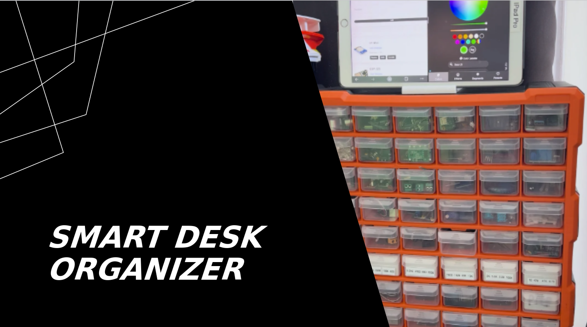

Პროექტის მიზანი
Smart Desk Organizer-ის მიზანია სამუშაო სივრცის ორგანიზებისა და ფუნქციონალურობის გაუმჯობესება თანამედროვე ტექნოლოგიების ინტეგრაციის გზით.
პროექტი უზრუნველყოფს კომფორტულ და ეფექტურ გარემოს, რაც მომხმარებლებს ეხმარება პროდუქტიულობის გაზრდაში და საქმეზე ფოკუსირებაში.
